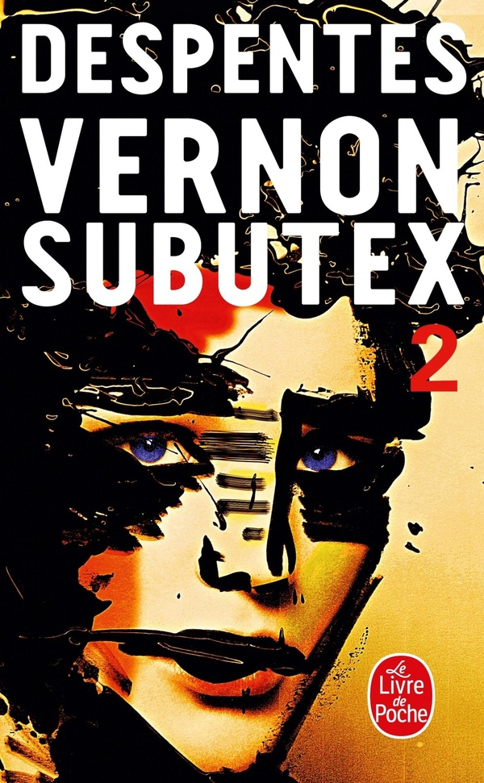
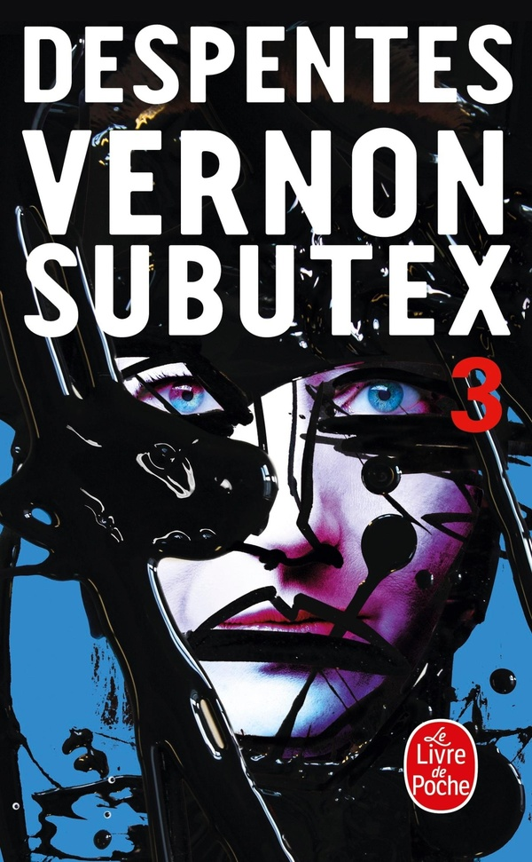
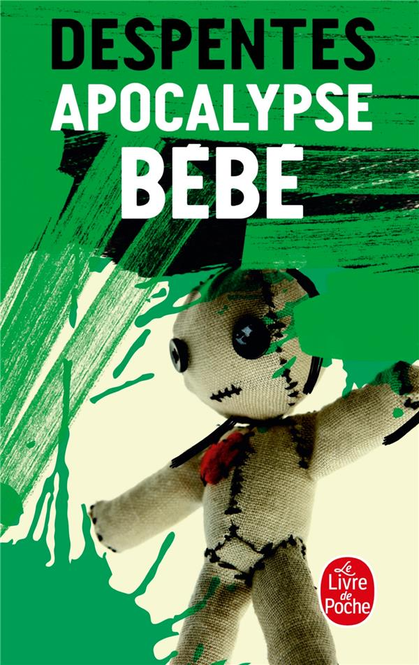
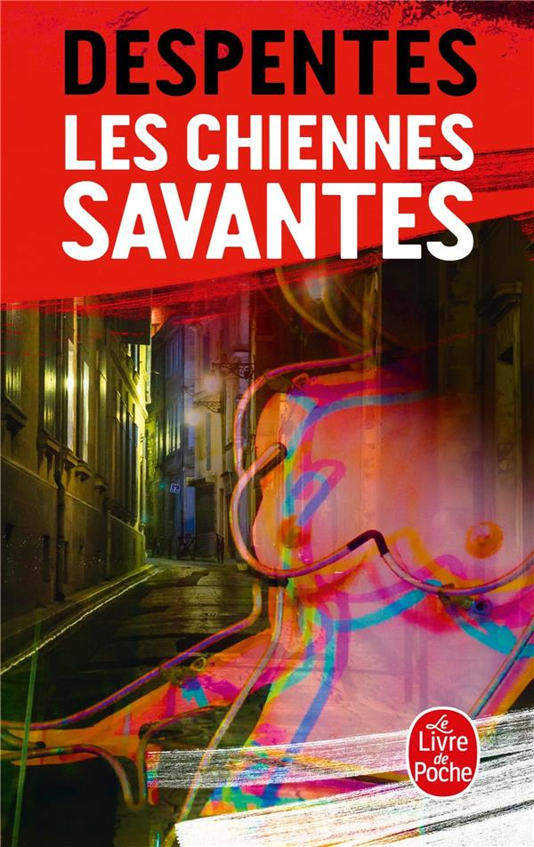
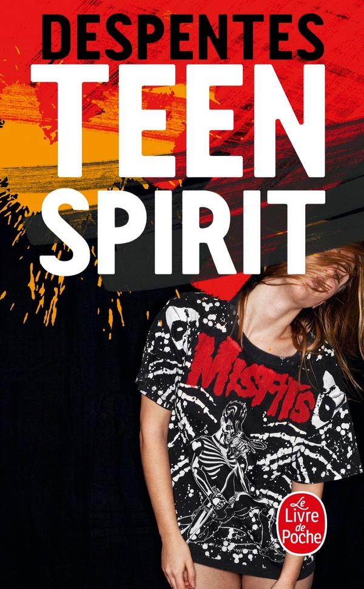
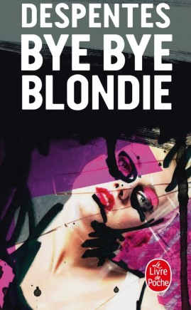
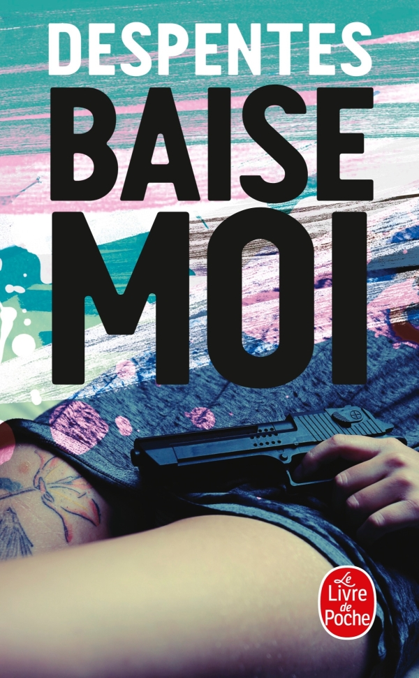
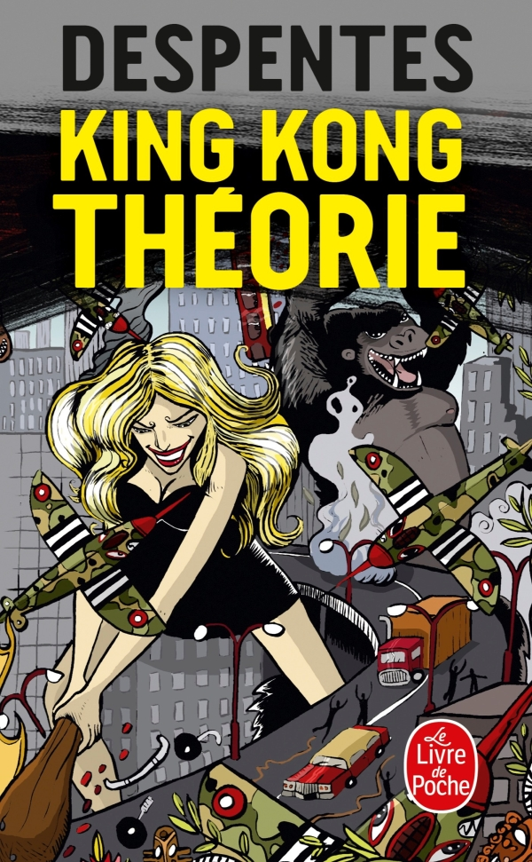
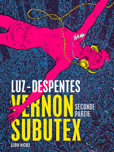

Roman épistolaire qui explore des thèmes contemporains comme le féminisme, la cancel culture, et les relations humaines à travers des échanges de courriels entre deux personnages principaux : une actrice vieillissante et un écrivain controversé. Avec humour et franchise, ils confrontent leurs failles, leurs désaccords, et leur vision du monde, offrant une réflexion acérée sur la société actuelle.
Vernon Subutex 1
Vernon est expulsé de chez lui et se retrouve sans domicile fixe, vivant de petits boulots et de rencontres. Il est en possession de vidéos de la star du rock Alex Bleach, qui se suicidera peu après. Ces vidéos deviennent un objet de convoitise et un moyen pour Vernon de tisser des liens avec divers personnages : anciens amis, jeunes adultes, artistes ratés ou désillusionnés. Le livre explore la quête de sens de Vernon, la fracture sociale et l'isolement.
Vernon Subutex 2
Vernon, toujours en quête de refuge. Il erre à Paris, s'installant chez des connaissances de plus en plus distantes et fragiles. Ce tome montre l’intensification de la crise sociale, avec l’apparition de tensions politiques et une description plus précise des luttes internes des personnages. Les vidéos d’Alex Bleach deviennent encore plus symboliques et l’intrigue prend une tournure plus sombre avec de nouvelles révélations.

Vernon Subutex 3
Vernon, toujours en fuite, se retrouve dans une situation de plus en plus désespérée. Les événements autour des vidéos d’Alex Bleach se dénouent, et Vernon doit faire face à ses choix de vie. Ce tome clôt l’arc de Vernon, tout en offrant une réflexion acerbe sur les dérives contemporaines de la société, l'aliénation et la recherche d’un idéal dans un monde en crise.

Apocalypse bébé
Valérie, une détective privée, et Béa, une jeune fille en fugue. Valérie est chargée de retrouver Béa, la fille d'une famille bourgeoise, disparue dans des circonstances mystérieuses. Le roman se déroule sur un fond de critique sociale, en particulier des classes supérieures et de la jeunesse contemporaine, et aborde des thèmes tels que l’identité, la sexualité et la violence. L'enquête sur la disparition se mêle à une exploration de la quête de soi dans un monde de plus en plus déconnecté et absurde.

Les jolies choses
Marie et Lucie, vivant à Paris. Marie, la narratrice, raconte leur enfance marquée par la pauvreté et les difficultés, ainsi que leur relation complexe avec leur mère. Le roman explore les thèmes de l’aliénation, de la violence familiale et du désir. Le style de Despentes, cru et sans compromis, décrit la vie de ces jeunes femmes confrontées à une société qui les marginalise, tout en explorant la dynamique complexe entre les personnages et leur évolution personnelle.
Les chiennes savantes
Nina, une jeune femme qui se définit par sa rébellion contre la société patriarcale et bourgeoise. En s’appuyant sur la figure de la "chienne savante", l’autrice met en lumière une critique acerbe du féminisme et de la condition féminine, tout en abordant des questions de sexualité, de transgression et de recherche de liberté. Le livre dénonce les rôles imposés aux femmes et invite à une remise en question radicale des normes sociales et culturelles.

Teen spirit
trois jeunes filles, toutes en quête d’une identité propre dans un monde dominé par la consommation et la superficialité. Le livre se concentre sur la jeunesse, les rêves brisés et la quête de sens dans un univers où l'authenticité semble impossible. En s’inspirant de l’imaginaire du rock et de la culture "teen", Despentes explore la manière dont les jeunes s'engagent dans des révoltes personnelles et sociales, souvent au prix de violences et de conflits intérieurs.

Bye bye blondie
Ce roman est une réflexion sur la mémoire, l’amour, la révolte et les blessures laissées par le passé. L’histoire suit Gloria, une ancienne rockeuse, et son ex-compagne, Frances, qu'elle retrouve après plusieurs années d'éloignement. La relation entre les deux femmes est marquée par des blessures du passé, et le roman interroge les thèmes du pardon, de la violence psychologique et de la quête de soi à travers des relations tumultueuses.

Baise moi
roman audacieux et provocateur qui raconte l’histoire de deux femmes, Nadine et Manu, qui, après des expériences traumatisantes, se lancent dans une spirale de violence, de sexe et de rébellion. Le livre mêle scènes de vengeance brute et critique sociale, en dépeignant un monde où les femmes se libèrent des contraintes imposées par la société patriarcale. Il aborde des thèmes comme la sexualité, la violence, l'aliénation et la quête de liberté.

King kong théorie
essai féministe puissant où l'autrice partage son vécu pour dénoncer les violences patriarcales, les stéréotypes de genre et les injonctions faites aux femmes. Elle prône une féminité libre et affranchie, loin des normes imposées.

Vernon Subutex
Adaptée du roman de Virginie Despentes, cette BD suit Vernon, un disquaire déchu à la rue après la fermeture de son magasin. Entre errance et rencontres, il devient un témoin des fractures sociales et des dérives de notre époque.
Vernon Subutex 2
Poursuivant son errance, Vernon croise des personnages abîmés par la vie, dévoilant leurs secrets et leurs blessures. Il incarne malgré lui un lien fragile entre des vies éclatées dans une société en perte de repères.
